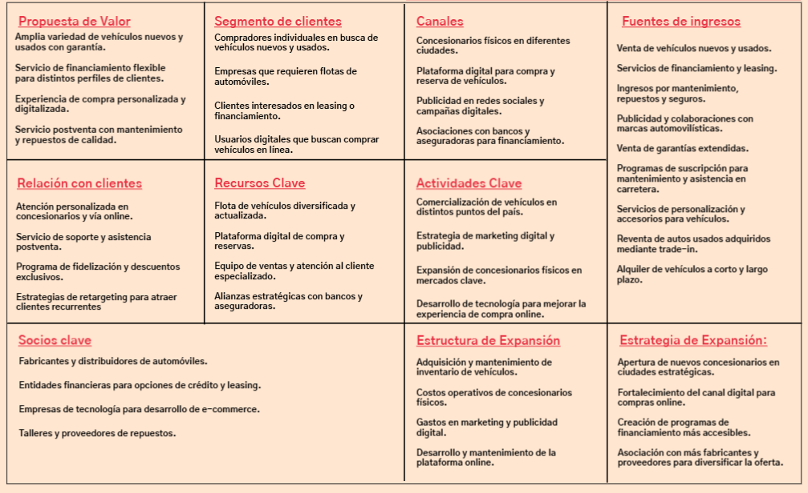

AbejaConcesionario: Estrategia y eCommerce
AbejaConcesionario nació como un reto para profesionalizar la venta de vehículos online, centrándose en la creación de una identidad digital sólida y una plataforma capaz de captar clientes de alto valor de forma automática.
Propuesta de Valor
El núcleo del proyecto es ofrecer una experiencia de compra transparente y segura. Definimos beneficios clave como la certificación de vehículos, pruebas de conducción sin compromiso y una política de 7 días de prueba.

El Reto
El mercado automovilístico online suele ser frío y complejo. El desafío era diseñar una experiencia de usuario (UX) intuitiva permitiendo una gestión fluida de leads en un entorno altamente competitivo.
Modelo Canvas del Negocio
Para asegurar la viabilidad, diseñé un Modelo Canvas detallado. Este análisis permitió estructurar los flujos de ingresos, identificar los recursos clave y establecer alianzas estratégicas con entidades financieras.

Análisis DAFO
Realicé un diagnóstico profundo integrando la visión de utilizar herramientas líderes en el mercado como Oracle NetSuite y Salesforce para optimizar la atención al cliente y la gestión operativa.
Fortalezas
AbejaConcesionarios tiene la ventaja de estar en Estados Unidos, un país donde el automóvil es esencial para la vida diaria, lo que garantiza una demanda constante. Además, estamos ubicados en un punto estratégico con alto tráfico de clientes, lo que nos permite atraer más compradores.
Debilidades
A veces no podemos tener todos los modelos que buscan los clientes, porque dependemos de los fabricantes. Como somos una empresa mediana, competimos con concesionarios más grandes que pueden ofrecer descuentos o precios más bajos. También es importante manejar bien nuestro inventario. Además, los cambios en el precio de la gasolina y los seguros afectan las decisiones de compra.
Oportunidades
Cada vez más personas buscan autos eléctricos y ecológicos, lo que nos permite ampliar nuestra oferta. También podemos crecer y abrir más concesionarios en lugares con mucha demanda. Además, hay muchas personas interesadas en autos seminuevos de calidad, dándonos otra oportunidad para vender más.
Amenazas
Hay mucha competencia en el mercado, con grandes concesionarios que pueden atraer a los clientes con grandes ofertas. Si la economía se complica, la gente podría esperar más tiempo antes de comprar. También pueden cambiar las reglas sobre qué autos pueden venderse, y los avances en autos autónomos o transporte compartido pueden reducir las compras a futuro.
Resultados
El resultado final es una plataforma eCommerce optimizada para la conversión, preparada para escalar e integrarse con sistemas de gestión avanzada.
Competencias y herramientas aplicadas: